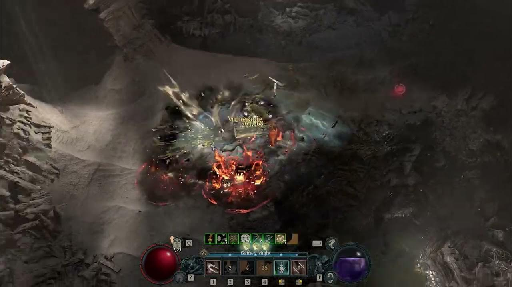

Rogues can alternate between ranged weapons (bows or crossbows) and melee weapons (specifically daggers or swords).
Just like the Barbarian's Arsenal system, they can alternate between these weapon categories, therefore, there is no locking out of skill options by picking a specific weapon choice.
A skill's stats will depend on the appropriate weapons' stats: i.e. ranged skills will be calculated using ranged weapons.
Another pillar of the class is mobility, which can be used for assault, quick repositioning, or to retreat.
Just like the Barbarian's Arsenal system, they can alternate between these weapon categories, therefore, there is no locking out of skill options by picking a specific weapon choice.
A skill's stats will depend on the appropriate weapons' stats: i.e. ranged skills will be calculated using ranged weapons.
Another pillar of the class is mobility, which can be used for assault, quick repositioning, or to retreat.
